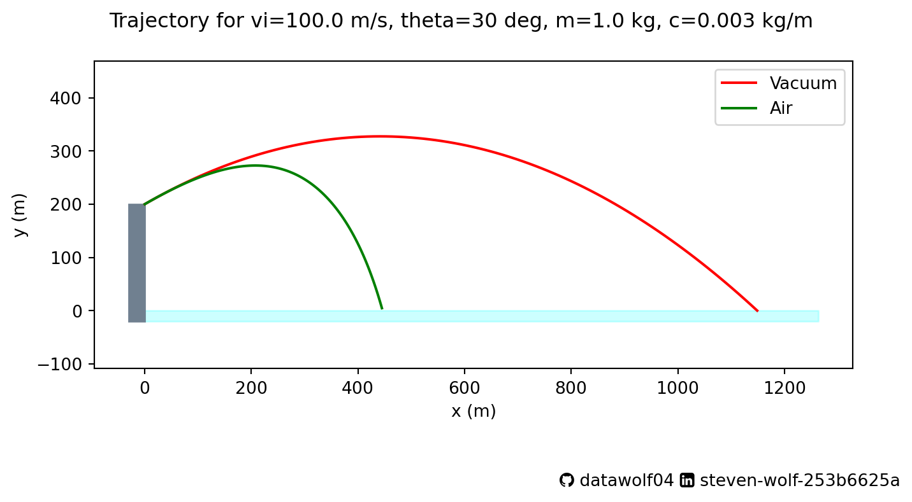
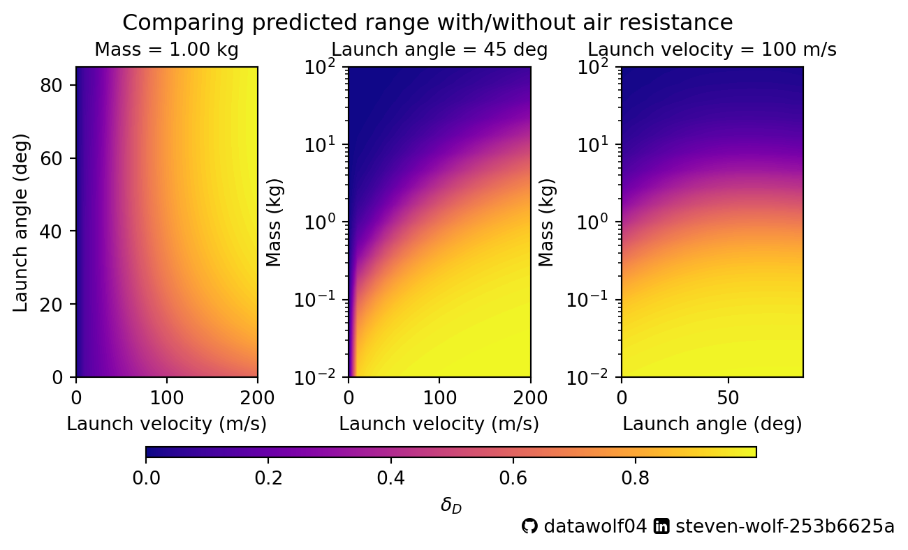

import numpy as np
class idealProjectile:
'''
Does the standard Physics 1 treatment of a projectile on earth for a projectile
fired from an elevated position
Inputs:
vLaunchMag = launch speed in m/s
vLaunchDir = launch angle measured from horizontal in degrees
height = elevation of the position in m
Outputs: (All in SI units)
tof = time of flight in seconds
maxX = range of projectile in m
position = function that calculates vector position as a function of time
velocity = function that calculates vector velocity as a function of time
acceleration = function that calculates vector acceleration as a function of time
'''
def __init__(self, vLaunchMag, vLaunchDir, height):
self.v0 = vLaunchMag
theta = np.pi/180*float(vLaunchDir)
self.theta = theta
self.h = height
self.g = 9.81
g = self.g
v0x = vLaunchMag*np.cos(theta)
v0y = vLaunchMag*np.sin(theta)
self.tof = (v0y + np.sqrt(v0y**2 + 2*g*height))/g
self.maxX = v0x * self.tof
def position(self, t):
v0, theta, g, h = self.v0, self.theta, self.g, self.h
v0x = v0*np.cos(theta)
v0y = v0*np.sin(theta)
x = v0x * t
y = h + v0y*t - 1/2 * g * t**2
return [x,y]
def velocity(self,t):
v0, theta, g = self.v0, self.theta, self.g
v0x = v0*np.cos(theta)
v0y = v0*np.sin(theta)
vx = v0x
vy = v0y - g*t
return [vx,vy]
def acceleration(self,t):
return [0,-self.g]I’ve stalled out a bit on my heat equation modeling project because I’ve been thinking about ways to make it better. Also, I’ve been busy with the real world. So I thought I’d adapt something that I’ve used in class and post it here. Plus, I can’t let my students have all the fun, right? In the standard treatment, we often make approximations that may or may not be valid, and never test these approximations. In fact, that’s why we physicists often get made fun of, because we are talking about spherical cows. I like to get my students to think beyond spherical cows and give them tools to examine the limits of these approximations. So I’m going to build the models, and then play around a bit.

A typical Physics 1 projectile motion problem
I’ve given this problem (or variations of it) in my physics class for years:
While on a vacation to Kenya, you visit the port city of Mombassa on the Indian Ocean. On the coast, you find an old Portuguese fort probably built in the 16th century. Large stone walls rise vertically from the shore to protect the fort from cannon fire from pirate ships. You wonder how close a pirate ship would have to sail to the fort to be in range of the fort’s cannon. Of course you realize that the range depends on the velocity that the cannonball leaves the cannon, as well as the height of the cliff.
Usually, we set up a coordinate system like the picture below:
Using this coordinate system, we can determine the equations of motion as follows:
\[ \begin{align*} a_x(t) = \frac{dv_x}{dt} &= 0 \\ a_y(t) = \frac{dv_y}{dt} &= -g \\ \end{align*} \]
These are integrated to find the velocity with the condition: \(\vec{v}_i = (v_i\cos\theta, v_i\sin\theta) = (v_x(0),v_y(0))\):
\[ \begin{align*} v_x(t) = \frac{dx}{dt} &= v_i \cos\theta t \\ v_y(t) = \frac{dy}{dt} &= v_i \sin\theta t - gt \\ \end{align*} \]
These are integrated again to find the position with the condition: \(\vec{r}_i = (0,H) = (x(0),y(0))\)
\[ \begin{align*} x(t) &= v_i \cos\theta t \\ y(t) &= H + v_i\sin\theta t - \frac{1}{2}gt^2 \\ \end{align*} \]
We are also interested in the time of flight (i.e., How long the projectile is in the air):
\[ y(T) = 0 = H + v_i \sin\theta T - \frac{1}{2} gT^2 \implies T = \frac{v_i\sin\theta + \sqrt{v_i^2 \sin^2\theta + 2gH}}{g} \]
(Note, since the projectile is launched at \(t=0\), we expect the time of flight \(T>0\), so I have thrown out the negative solution for \(T\) in the equation above.)
And the range1 of the projectile: \[ D = x(T) = v_i\cos\theta T = v_i \cos\theta \frac{v_i\sin\theta + \sqrt{v_i^2 \sin^2\theta + 2gH}}{g} \]
This allows us to give physics students problems, and get them to calculate things. We also say that the motion of the cannonball is parabolic, and a bunch of other stuff that only works if we are talking about spherical cows flying around in vacuum. Anyone who has seen a shot tracer of a golf ball will say that these don’t look like the parabolas we all drew back in High School Algebra classes. So what’s going on?
Ideal Projectile Motion: Thinking about code
At this point, we have fully specified the problem. Any motion is fully specified given the cliff height \(H\), launch speed \(v_i\), and launch angle \(\theta\). We are done. Computationally, we want to be able to calculate all the important things, and define all of the important functions. I have chosen to use a python class to do so. The nice thing about using classes is that you can specify all of the variables for the system, but not have them cluttering the working environment.
Air resistance: It’s a drag.
When we model motion in a fluid, for large, fast objects we can write:
\[ \vec{F}_{\text{air}} = -c \left|\vec{v}\right|\vec{v} = -c \sqrt{v_x(t)^2+v_y(t)^2} (v_x(t), v_y(t)) \] where the coefficient \(c\) is a constant that depends on the size and shape of the object moving through air, as well as the density of the fluid. This model can get more complicated, and wikipedia discusses it further at a reasonably intro-level. But I won’t bore you here.
Including this in our model for projectile motion allows us to generate new equations of motion, and this can be done for all levels of physics.
\[ \begin{align*} a_x(t) = \frac{dv_x}{dt} &= - \frac{c}{m} \sqrt{v_x^2+v_y^2} v_x\\ a_y(t) = \frac{dv_y}{dt} &= -g - \frac{c}{m} \sqrt{v_x^2+v_y^2} v_y\\ \end{align*} \]
These are integrated to find the velocity with the condition: \(\vec{v}_i = (v_i\cos\theta, v_i\sin\theta) = (v_x(0),v_y(0))\), and we get…an error.

Well, we can integrate these equations if we use, well, I’ll let Katherine Johnson’s character from the movie Hidden Figures tell you:
We won’t actually use Euler’s method, but instead use the default method in Python’s scipy.integrate.solve_ivp function - an application of the Runge-Kutta method which is still pretty ancient. (Well, it’s older than me!) I won’t be going into the details of the method here.
The level of the class that I’m teaching determines how I proceed from here. If we have an upper level class, students use the numeric integrator of their choice, be it in Mathematica, Matlab, Python, or something else. In an intro class, I walk through Euler (or Euler-Cromer) integration with them. (And they will have seen a 1D implementation of Euler’s method before we tackle this 2D version.)
Thinking about code
Once we add the projectile mass \(m\), and drag coefficient \(c\) to the parameters that we had for the the ideal motion, \(H\), \(v_i\), and \(\theta\), we have fully specified the problem. Despite the fact that we cannot integrate the equations of motion analytically, we can do so numerically. As before, I have chosen to use a python class to carry this out. Actually, I’ve created two classes to do this. Let’s go into the why for this choice in the next sections.
A note about integrating differential equations numerically
In physics, we use Newton’s laws to generate differential equations governing the motion of a system. Specifically, we get the acceleration, which is the second derivative of position. So if we want the position as a function of time for a system, this is a 2nd order differential equation. However, numerical methods are built on solving 1st order differential equations.2
Let’s think about the function \(u(t)\) which returns a vector comprised of the position vector combined with the velocity vector.
\[ u(t) = \left[x(t), y(t), v_x(t), v_y(t) \right] \]
We can take the time derivative of this function (I’ll use a dot to signify differentiation with respect to time) and express it in terms of the velocity and acceleration \[ \dot{u}(t) = \left[\dot{x}(t), \dot{y}(t), \dot{v}_x(t), \dot{v}_y(t) \right] = \left[v_x(t), v_y(t), a_x(t), a_y(t)\right] \]
dragEOM is this function \(\dot{u}(t)\) applied to our projectile system.
class dragEOM:
'''
Equations of motion for projectile system with turbulent drag fired from an elevated position
Inputs:
vLaunchMag = launch speed in m/s
vLaunchDir = launch angle measured from horizontal in degrees
height = elevation of the position in m
mass = mass of projectile in kg
dragCoef = drag coefficient for system in kg/m
Outputs:
udot = [xdot, ydot, vxdot, vydot]
splash = function that returns y coordinate (needed for integration)
'''
def __init__(self, vLaunchMag, vLaunchDir, height, mass, dragCoef):
self.v0 = vLaunchMag
theta = np.pi/180*float(vLaunchDir)
self.theta = theta
self.h = height
self.g = 9.81
g = self.g
self.coef = dragCoef/mass
v0x = vLaunchMag*np.cos(theta)
v0y = vLaunchMag*np.sin(theta)
self.idealTof = (v0y + np.sqrt(v0y**2 + 2*g*height))/g
self.u0 = [0, height, v0x, v0y]
def __call__(self,t,u):
g, coef = self.g, self.coef
x, y, vx, vy = u
xdot, ydot = vx, vy
vxdot = -coef * np.sqrt(vx**2 + vy**2) * vx
vydot = -g - coef * np.sqrt(vx**2 + vy**2) * vy
udot = [xdot, ydot, vxdot, vydot]
return udot
def splash(self,t,u):
return u[1]
splash.terminal = TrueGetting the motion
Now that this is done, we can get the motion for this system using the following class:
from scipy.integrate import solve_ivp
class dragProjectile:
'''
Equations of motion for projectile system with turbulent drag fired from an elevated position
Inputs:
vLaunchMag = launch speed in m/s
vLaunchDir = launch angle measured from horizontal in degrees
height = elevation of the position in m
mass = mass of projectile in kg
dragCoef = drag coefficient for system in kg/m
Outputs:
t = vector of time values where the system is solved
x, y = vectors of position values matching the time vector above
vx, vy = vectors of velocity values matching the time vector above
ax, ay = vectors of acceleration values matching the time vector above
tof = time of flight
maxX = projectile range
'''
def __init__(self, vLaunchMag, vLaunchDir, height, mass, dragCoef):
model = dragEOM(vLaunchMag, vLaunchDir, height, mass, dragCoef)
tMax = 2 * model.idealTof
tVals = np.linspace(0,tMax,100)
u0 = model.u0
sol = solve_ivp(model, t_span=[0,tMax], y0 = u0, t_eval=tVals, events=model.splash, dense_output=True)
self.tof = sol.t_events[0][0]
self.maxX = sol.y_events[0][0][0]
self.t = sol.t
self.x = sol.y[0, :]
self.y = sol.y[1, :]
self.vx = sol.y[2, :]
self.vy = sol.y[3, :]
udot = model(sol.t, sol.y)
self.ax = udot[2]
self.ay = udot[3]Comparing motion with/without air resistance
Now that we have these tools built, we can start to visualize this motion. I’ll do this using some functions in my projectile.py file to make graphs. I will also include the following numerical values:
- \(H = 200\) m
- \(v_i = 100\) m/s
- \(\theta = 30\) deg
- \(m = 1\) kg
- \(c = 0.003\) kg/m
import numpy as np
import matplotlib.pyplot as plt
from projectile import *
H = 200
vi = 100
theta = 30
m = 1
c = 0.003I will visualize this motion in two ways. First, I’ll plot each quantity of the motion (position, velocity, acceleration) vs. time.
plotCannonCurves(vi,theta,H,m,c)Now I will plot the trajectory (y-coordinate vs x-coordinate). Note that I have added boxes to this plot indicating the cliff location and the water level to help guide the eye. The plot has also been set up with an equal aspect ratio so that the horizontal and vertical distances are the same. The green curve should more closely match the golf ball tracer than the red parabolic path does.
makeTrajectoryPlot(vi,theta,H,m,c)
Where to go from here
Usually, I’ll give my students some tasks like finding the maximum range of the projectile, and comparing the model results. I thought that I would do something a little different as it will allow me to compare the model predictions. I will do this using the fractional difference between the two predictions for both the range and the time of flight. Since I used \(D\) to denote the range, I will write \(D_1\) to denote the range for model 1 (no air resistance) and \(D_2\) to denote the range for model 2 (with air resistance). Therefore the quantity below is the fractional difference between the targeting location of the models.
\[ \delta_D = \frac{\left|D_1 - D_2\right|}{D_1} \]
I will also define a similar quantity related to the time-of-flight.
\[ \delta_T = \frac{\left|T_2 - T_1\right|}{T_2} \]
Note that I’m using \(D_1\) in the denominator of \(\delta_D\) and \(T_2\) in the denominator of \(\delta_T\). This is because these are the larger values for each motion.
I will calculate these quantities for a range of launch velocities, masses, and launch angles keeping the cliff height \((H=100 \,\text{m})\) and drag coefficient \((c=0.003 \,\text{kg/m})\) the same as it was before.
Code
import matplotlib.colors as mc
import matplotlib.cm as cm
launchVelocities = np.linspace(0,200,21)
launchAngles = np.linspace(0,85,18)
masses = np.logspace(-2,2,19)
nv = len(launchVelocities)
na = len(launchAngles)
nm = len(masses)
deltaD = np.empty(shape=(nv,na,nm))
deltaT = np.empty(shape=(nv,na,nm))
for i in range(nv):
for j in range(na):
for k in range(nm):
lv = launchVelocities[i]
la = launchAngles[j]
mm = masses[k]
m1 = idealProjectile(lv,la,H)
m2 = dragProjectile(lv,la,H,mm,c)
D1 = m1.maxX
D2 = m2.maxX
T1 = m1.tof
T2 = m2.tof
deltaT[i,j,k] = np.abs(T1 - T2)/T2
if D1<1 and D2 <1:
# For small ranges (less than 1 meter from the cliff), just set the
# fractional difference equal to zero
deltaD[i,j,k] = 0
else:
deltaD[i,j,k] = np.abs(D1 - D2)/D1
# Set up properties of the color bar
cnormD = mc.Normalize(vmin=0,vmax=deltaD.max())
cbarD = cm.ScalarMappable(norm=cnormD,cmap='plasma')
cnormT = mc.Normalize(vmin=0,vmax=deltaT.max())
cbarT = cm.ScalarMappable(norm=cnormT)
# Arrange the calculations into multiple grids for making a heatmap/contour plot
X1, Y1 = np.meshgrid(launchVelocities, launchAngles)
Z1 = deltaD[:, :, nm//2].transpose()
ZZ1 = deltaT[:, :, nm//2].transpose()
X2, Y2 = np.meshgrid(launchVelocities, masses)
Z2 = deltaD[:, na//2, :].transpose()
ZZ2 = deltaT[:, na//2, :].transpose()
X3, Y3 = np.meshgrid(launchAngles, masses)
Z3 = deltaD[nv//2, :, :].transpose()
ZZ3 = deltaT[nv//2, :, :].transpose()Now, let’s examine the model agreement for the range:
Code
fig1, ax1 = plt.subplots(1,3,figsize=(7,4))
fig1.suptitle("Comparing predicted range with/without air resistance")
CS = ax1[0].contourf(X1,Y1,Z1,100,cmap='plasma')
ax1[0].set_title(f'Mass = {masses[nm//2]:.2f} kg',size=10)
ax1[0].set_xlabel('Launch velocity (m/s)')
ax1[0].set_ylabel('Launch angle (deg)')
ax1[1].contourf(X2,Y2,Z2,100,cmap='plasma')
ax1[1].set_title(f'Launch angle = {launchAngles[na//2]:.0f} deg',size=10)
ax1[1].set_xlabel('Launch velocity (m/s)')
ax1[1].set_ylabel('Mass (kg)')
ax1[1].set_yscale('log')
ax1[2].contourf(X3,Y3,Z3,100,cmap='plasma')
ax1[2].set_title(f'Launch velocity = {launchVelocities[nv//2]:.0f} m/s',size=10)
ax1[2].set_xlabel('Launch angle (deg)')
ax1[2].set_ylabel('Mass (kg)')
ax1[2].set_yscale('log')
fig1.subplots_adjust(bottom=0.3,wspace=0.5,right=0.9)
cbar_ax = fig1.add_axes([0.2, 0.15, 0.65, 0.02])
fig1.colorbar(cbarD, cax=cbar_ax,label=r'$\delta_D$',orientation='horizontal')
ghLogo = u"\uf09b"
liLogo = u"\uf08c"
txt = f"{ghLogo} datawolf04 {liLogo} steven-wolf-253b6625a"
plt.figtext(0.6,0.01, txt,family=['DejaVu Sans','FontAwesome'],fontsize=10)
plt.savefig('rangeCalcFracDiff.png')
plt.show()
Finally, I’ll examine the model agreement for the time-of-flight:
Code
fig1, ax1 = plt.subplots(1,3,figsize=(7,4))
fig1.suptitle("Comparing predicted time of flight with/without air resistance")
CS = ax1[0].contourf(X1,Y1,ZZ1,100)
ax1[0].set_title(f'Mass = {masses[nm//2]:.2f} kg',size=10)
ax1[0].set_xlabel('Launch velocity (m/s)')
ax1[0].set_ylabel('Launch angle (deg)')
ax1[1].contourf(X2,Y2,ZZ2,100)
ax1[1].set_title(f'Launch angle = {launchAngles[na//2]:.0f} deg',size=10)
ax1[1].set_xlabel('Launch velocity (m/s)')
ax1[1].set_ylabel('Mass (kg)')
ax1[1].set_yscale('log')
ax1[2].contourf(X3,Y3,ZZ3,100)
ax1[2].set_title(f'Launch velocity = {launchVelocities[nv//2]:.0f} m/s',size=10)
ax1[2].set_xlabel('Launch angle (deg)')
ax1[2].set_ylabel('Mass (kg)')
ax1[2].set_yscale('log')
fig1.subplots_adjust(bottom=0.3,wspace=0.5,right=0.9)
cbar_ax = fig1.add_axes([0.2, 0.15, 0.65, 0.02])
fig1.colorbar(cbarT, cax=cbar_ax,label=r'$\delta_T$',orientation='horizontal')
ghLogo = u"\uf09b"
liLogo = u"\uf08c"
txt = f"{ghLogo} datawolf04 {liLogo} steven-wolf-253b6625a"
plt.figtext(0.6,0.01, txt,family=['DejaVu Sans','FontAwesome'],fontsize=10)
plt.savefig('tofCalcFracDiff.png')
plt.show()Note that the color scales for these plots have different ranges. In particular the max \(\delta_T\) value is larger than the max \(\delta_D\) value. Given the initial height, it would seem that the time of flight is much more sensitive to air resistance. In general, areas on the plots above where the color is yellow shows a high level of disagreement between motion in vacuum vs. motion in air. Areas where the color is blue/violet shows a low level of disagreement between the models. Since air resistance is dependent on speed, we would expect that at low speeds, air resistance is less important, especially for the range calculation. Given the fact that gravity/weight is the other force of interest, objects with a larger mass are also less sensitive to air resistance.
There is an interesting “trough” in the time of flight graphic. You can see that the minimum \(\delta_T\) values aren’t along one of the axes as they are for \(\delta_D\). This is because for very slow, or nearly vertical launch trajectories, the range isn’t going to be very different as it just doesn’t move very fast in the x-direction. Perhaps the best way to think about this is to compare the motion of a gently tossed pebble to a gently tossed feather from the same height. They both land in (about) the same place. So both have a small difference with the vacuum range. The time of flight will be different, since the feather stops going up sooner, and falls with an average acceleration much different than \(-g\). Yet the motion of the pebble will be much more similar to the vacuum motion since the drag force is much smaller in magnitude than the weight of the pebble.
Motion of a “feather” vs a “pebble”
Code
vi = 50
vdir = 85
vacuum = idealProjectile(vi,vdir,H)
iTime = np.linspace(0,vacuum.tof,100)
[iPosx, iPosy] = vacuum.position(iTime)
[iVelx, iVely] = vacuum.velocity(iTime)
[iAccx, iAccy] = vacuum.acceleration(iTime)
feather = dragProjectile(vi,vdir,H,.1,c)
pebble = dragProjectile(vi,vdir,H,10,c)
fig, ax = plt.subplots(1,3,figsize=(9,4))
fig.suptitle(f'Motion of ideal projectile, "feather", and "pebble" for \n'+
f'launch velocity = {vi:.0f} m/s and launch angle = {vdir:.0f} deg')
ax[0].axhline(iAccx,label='vacuum')
ax[0].plot(feather.t, feather.ax,'r',label='feather')
ax[0].plot(pebble.t, pebble.ax,'g',label='pebble')
ax[0].set_xlabel('time (s)')
ax[0].set_ylabel(r'$a_x$ (m/s^2)')
ax[0].legend()
ax[1].axhline(iAccy,label='vacuum')
ax[1].plot(feather.t, feather.ay,'r',label='feather')
ax[1].plot(pebble.t, pebble.ay,'g',label='pebble')
ax[1].set_xlabel('time (s)')
ax[1].set_ylabel(r'$a_y$ (m/s^2)')
ax[0].set_ylim(ax[1].get_ylim())
ax[1].legend()
ax[2].plot(iPosx,iPosy, label='vacuum')
ax[2].plot(feather.x, feather.y,'r', label='feather')
ax[2].plot(pebble.x, pebble.y,'g',label='pebble')
ax[2].axis('equal')
ax[2].set_xlim([0,200])
ax[2].set_xlabel(r'$x$ (m)')
ax[2].set_ylabel(r'$y$ (m)')
ax[2].legend()
fig.subplots_adjust(wspace=0.4,bottom=0.2)
plt.figtext(0.65,0.01, txt,family=['DejaVu Sans','FontAwesome'],fontsize=9)
plt.show()Footnotes
No, that’s not the “range equation” found in standard physics textbooks. And no, I haven’t made a mistake. The “range equation” in the standard physics text assumes \(H=0\), that is, there is no elevation change to be concerned about. We can reduce this if we set \(H=0\). In this case, \(T = \frac{2 v_i \sin\theta}{g}\) and \(D = \frac{2 v_i^2 \sin\theta \cos\theta}{g} = \frac{v_i^2 \sin(2\theta)}{g}\), which is the standard physics textbook result, or what the AI will tell you if you google “range equation physics”.↩︎
In general, a \(n\)th order differential equation has a \(n\)th derivative of a function as the highest order derivative of a function. So the equation \(f'(x) = f(x) + 3(f(x))^2\) is a 1st order differential equation in \(f(x)\) because it has that function, as well as the first derivative of that function only. And \(f''(x) = f(x) + 3(f'(x))^2\) is a 2nd order differential equation.↩︎